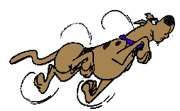

|
Issue One
June '99
|
|
And so on June 21st, 1999, the first issue of YS3 went online to public disinterest. Bringing a paltry selection of articles, a limited number of pictures of Scooby Doo, and a gratuitous scantily-clad girlie almost as an afterthought, the saving grace of the first issue lay in the half-dozen well-written reviews. Just over three hundred hits were counted, and at least a third were from the YS3 team and people Nathan threatened into reading.
|

|
Released: June 21st 1999
OPI: 330
Reviews: Ant Attack 90°; Bubble Bobble 30°; Pang 78°; Prince of Persia 57°; Robocop 85°
Features: A really odd short story by Jon, that somehow comprised elements of Blade Runner, 1984 and the global importance of the Spectrum. Bizarre in the extreme.
Trainspotters Throughout History: Nathan flew Virgin all the way to America (No jokes, please. Ed) and broke into Microsoft HQ for this world-exclusive interview with Bill Gates. What a guy.
Where Are They Now? Betamax, Paul Daniels, Michael Jackson, the other girl in Bucks Fizz, Michael Keaton, Jeremy Paxman’s sense of journalistic integrity, Dusty Fleming, Doctor Who.
TAP included: What will all the excitement of making the issue, there wasn’t one. Sorry.
What we really want to know is… why we didn’t think of this until issue two.
Random stuff in the small print: Liquid Refreshments courtesy of Coca-Cola. Sunflowers by Van Gogh.
It was a special issue because: It was the first! And all those letters we got from prophetic members of the YS3 readership who foresaw the appearance of the magazine… it’s not like Jon made them all up or anything.
|
Why YS3?
On August 21st 1993, Your Sinclair put the last (the very last) issue
out for sale. The Big Final Issue was an event that nobody who
experienced it will ever forget. Those of us raised on YS's general
style, attitude to life and crap jokes felt a great sense of loss when
we were finally told that the party would now be over. Some of us went
into denial. Fanzines were launched, user groups united. But there was
still no shining light to bind them all together.
A lot changed in the years that followed. The Sony Playstation. The
death of the Amiga. A Labour government. But somehow it all seemed so
hollow without the Great Magazine to brighten up the world every month.
A generation was forced to grow up, and put aside childish things, no
matter how much they loved them.
On June 21st 1999, YS3 was launched. All that childish nonsense fell in
a heap as Jon and Nathan broke the lock off the closet with a large axe.
Well, Jon broke the lock off and Nathan supervised from a safe distance
(Start as you mean to go on, eh? Jon). It was time once more to declare
to all and sundry that your favourite computer was crap - but in a
funky, skillo sort of way...
No, Really, Why YS3?
On the covertape of the last few issues of YS was a small but
perfectly-formed ripped copy of Sceptical, that along with its
many-paged Teletexticity was YS2. That's why.
Reviews
Jon:
It brought back memories of my work experience on PC Gamer a couple of years ago... reviewing is a tricky task, sorting out the wheat from the chaff, but I stand by that 3° score on ESWAT. I enjoyed going back and re-living all those classic 8-bit moments, those that proudly stood the test of time: Rainbow Islands, Target; Renegade, Escape From the Planet of the Robot Monsters... and ensuring that all the lesser titles were left in the attic to gather dust! It’s also exciting to see the retro scene coming to life so magnificently, though my PC’s not powerful enough to run most of the games. There’s a bittersweet irony there...
Nathan:
The first issue had six reviews in it. Six whole reviews. And I only wrote three of them. Gradually the number has dwindled, and as I write I've written all of the reviews for the last two issues (and Jamie wrote one three issues ago). And I'm probably going to have to do all the reviews this issue as well. Tch.
|
|